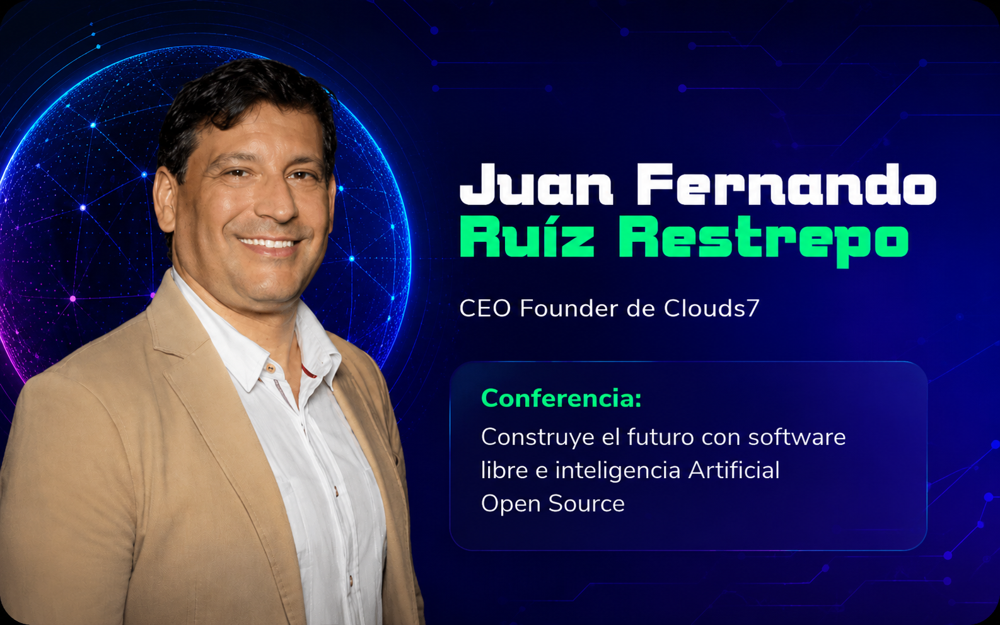

¿Qué es Colombia 5.0?
Colombia 5.0 es una iniciativa que busca impulsar la transformación digital del país mediante el uso
de nuevas tecnologías e innovación. Este espacio reúne a estudiantes, emprendedores, empresas y
expertos para compartir conocimientos y experiencias relacionadas con temas como la inteligencia
artificial, el desarrollo de software, la ciberseguridad, la ciencia de datos y la transformación
digital.
En Colombia 5.0 se pueden encontrar conferencias, talleres, charlas y actividades prácticas que
permiten aprender sobre las tendencias tecnológicas más importantes de la actualidad. Además, es una
oportunidad para conocer proyectos innovadores, establecer contactos profesionales y descubrir cómo
la tecnología puede contribuir al desarrollo de la sociedad y la economía del país.
Objetivo del Sitio
El objetivo de este sitio web es presentar información sobre Colombia 5.0, un evento enfocado en la innovación, la tecnología y la transformación digital en el país. A través de esta página se busca compartir los principales temas abordados durante el evento, las conferencias a las que asistí y los conocimientos adquiridos durante esta experiencia. Además, se pretende destacar la importancia de las nuevas tecnologías y su impacto en el desarrollo profesional, académico y social, mostrando cómo espacios como Colombia 5.0 fomentan el aprendizaje, la creatividad y la innovación.
Mi Experiencia
Participar en Colombia 5.0 fue una experiencia muy enriquecedora, ya que tuve la oportunidad de
conocer de cerca algunas de las tecnologías que están transformando el mundo actual. Durante las
conferencias y actividades aprendí sobre temas como la inteligencia artificial, la innovación
digital y el impacto de la tecnología en diferentes sectores. Además, pude escuchar las experiencias
de expertos y profesionales del área, lo que me permitió ampliar mis conocimientos y comprender
mejor las oportunidades que ofrece el sector tecnológico.
Lo que más me llamó la atención fue la forma en que la tecnología puede utilizarse para resolver
problemas reales y mejorar la calidad de vida de las personas. Esta experiencia fortaleció mi
interés por seguir aprendiendo sobre tecnología y me motivó a continuar desarrollando habilidades
que serán importantes para mi formación profesional.
Durante mi participación en Colombia 5.0 tuve la oportunidad de asistir a dos conferencias que me
permitieron conocer diferentes perspectivas sobre la innovación y el impacto de la tecnología en la
actualidad. En la siguiente seccion presento un breve resumen de cada una y los aspectos que más
llamaron mi
atención.
Conferencias

Inteligencia Artificial en Videovigilancia
Aplicación de inteligencia artificial para mejorar los sistemas de vigilancia y la toma de decisiones en tiempo real.
Leer más →IA en Marketing y Negocios
Uso de inteligencia artificial generativa para optimizar procesos y crear contenido digital de manera eficiente.
Leer más →Glosario Técnico
Como parte de las conferencias y actividades desarrolladas en Colombia 5.0, se presentaron diversos conceptos fundamentales relacionados con la inteligencia artificial, la videovigilancia, el marketing digital y la transformación digital. Estos temas permitieron comprender el impacto de las tecnologías emergentes en la sociedad y en el ámbito empresarial, así como las oportunidades que ofrecen para la innovación y el crecimiento. A continuación, se presenta un glosario técnico con algunos de los términos más importantes abordados durante el evento, acompañado de sus respectivas definiciones y traducciones al inglés.
Ver Glosario Completo →Conclusión y Reflexión Ética
La experiencia en Colombia 5.0 permitió comprender el impacto de la transformación digital y el papel de tecnologías como la inteligencia artificial en distintos sectores.Las conferencias mostraron cómo estas herramientas pueden mejorar la eficiencia, la seguridad y la innovación en las organizaciones.
La ética en la tecnología empresarial se implementa mediante el uso responsable de la inteligencia artificial, la protección adecuada de los datos y una automatización orientada a apoyar y optimizar el trabajo humano. Por ello, es fundamental que las empresas utilicen estas tecnologías de manera transparente y responsable, garantizando el respeto por la privacidad, la equidad y el bienestar de la sociedad.